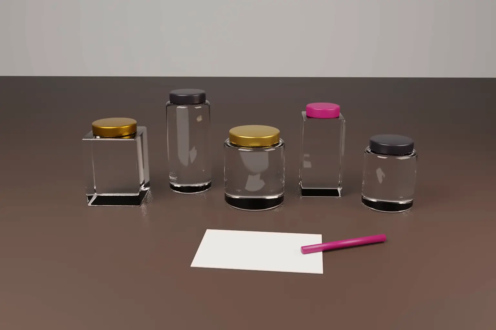

When a trademark is registered, it protects the company's brand name. But is trademark protection limited to the name, or does it reach further? The Nutella jar case decided by the Delhi High Court is a useful reference point. It shows how courts balance brand protection against the risk of monopolising ordinary shapes or packaging.
In deciding infringement, should courts take a holistic approach, or should they protect each element on its own? This question is best answered from the consumer's point of view. How do buyers identify a product and tell it apart from competing products before they buy?
- The Delhi High Court held that empty glass jars copying Ferrero's registered Nutella jar shape were infringing goods.
- The court found no evidence that the jar makers sold counterfeit Nutella. They were still permanently injuncted.
- A Division Bench held that under Section 28(1) read with Section 135(1), the 3,05,916 seized jars could be handed over only for destruction.
- Section 2(1)(zb) allows shape and packaging marks. Section 9(3) keeps functional shapes free, much like Article 7(1)(e) in the EU.
- Contract manufacturers and packaging suppliers face real risk if they copy a registered container shape.
The consumer's perspective in identifying a product
Consumers' buying decisions are shaped by the trademark, the brand identity attached to it and the credibility of that brand. Producers earn credibility through consistent quality and customer satisfaction. Over time, the quality and source of a product become linked to its trademark. For the consumer, recognising the producer's mark is a quick assurance of what they are buying. Consumers identify products at three levels.
First identifier: brand name and logo
A brand name and logo are the clearest way to communicate with customers. A word or symbol is quick to remember, easy to say and easy to find online. Shoppers use it as a shortcut for quality, price and trust. When someone sees "Nutella", they know what the product will be like before buying it. This is also the most common form of trademark protection.
Second identifier: shape and packaging
Packaging is usually what a consumer notices first. Shape, colour and material catch the eye before any words do. A regular buyer picks up the familiar jar with the white lid without reading the label. That is what made the Nutella case significant. Ferrero owned a registered trademark in the shape of the jar itself.
The defendants' own conduct showed how closely the shape had become tied to the brand. They offered the empty jars on their website as "NUTELLA glass jars" and said the jar was known by that name in their industry. A similar jar filled with a fake product can mislead buyers who do not read the label. It can also damage the real brand's reputation.
Third identifier: overall commercial expression
The broadest level covers everything consumers see and experience: colours, arrangement, fonts, display, marketing and where products are sold. In the United States this is called trade dress: the total image and overall appearance of a product or business. In Two Pesos, Inc. v. Taco Cabana, Inc., 505 U.S. 763 (1992), the US Supreme Court held that inherently distinctive trade dress can be protected without proof of secondary meaning. The trade dress in that case was the festive look of a Mexican restaurant, including its exterior, decor and layout.
From the consumer's point of view, no single element defines the product. A customer may not be able to name the colour or typeface that signals the brand, yet recognises the whole look at once. This is why courts examine the full presentation rather than individual parts. The Nutella case sits closer to the second level. It concerned a near identical copy of a registered jar shape, so it is mainly a shape case rather than an overall look case.
Central issues in the Nutella case
The case is Mr. Abhimanyu Prakash & Ors. v. Ferrero S.P.A & Ors., RFA(OS)(COMM) 1/2026. A Division Bench of the Delhi High Court, Justice C. Hari Shankar and Justice Om Prakash Shukla, decided it on 6 January 2026. It was an appeal in CS(COMM) 65/2023. The appellants challenged a Single Judge's judgment of 19 November 2025 and order of 8 December 2025.
Ferrero had sued manufacturers that made and sold empty glass jars. The Single Judge described them as "a near identical copy of the original Nutella jar". In February 2023 the court granted an ex parte interim injunction and appointed Local Commissioners, who seized the jars. The defendants later consented to the injunction being made absolute. On 19 November 2025 the Single Judge decreed the suit summarily under Order XIII A of the Code of Civil Procedure, 1908. The decree included a permanent injunction and costs of Rs. 10 lakh. She also directed that 3,05,916 seized jars be handed over to Ferrero, which could use them or fill them and donate them to NGOs.
The defendants appealed only against the direction on the seized jars. The Division Bench upheld the handover but limited its purpose. It held: "given the mandate of Section 135(1) of the Trade Marks Act, the bottles could have been directed to be handed over to the respondent only for the purposes of destruction, and not for being put to any other use". The jars were to be destroyed on 17 January 2026.
Can the shape of a container be protected without a name or label?
Yes, where the shape is registered as a trademark. Section 2(1)(zb) of the Trade Marks Act, 1999 defines a trademark to include the shape of goods, their packaging and combinations of colours. The mark must be able to distinguish one person's goods from those of others. The Division Bench noted that Ferrero asserted its right "in the bottle itself as a registered trademark".
The Single Judge treated the seized jars as infringing, although they were empty. She also found the defendants to be first time knowing infringers. Ferrero had pleaded that Nutella had been sold in India since 2009, and the defendants called their jars "NUTELLA glass jars". The Division Bench held that these findings had attained finality.
Is making and selling empty jars infringement, even without selling counterfeit Nutella?
The case answers yes. The defendants argued that the jars were ordinary containers that could hold honey, jams or pickles. The Single Judge found no evidence that they had colluded with counterfeiters or sold any counterfeit Nutella. Even so, the jars were held to infringe the registered shape mark, and the defendants were permanently injuncted.
The Division Bench then explained the consequence. Section 28(1) gives a registered proprietor two rights. The first is the exclusive right to use the mark for the registered goods. The second is the right to obtain relief against infringement as provided in the Act. Section 135(1) lists the reliefs. They include delivery up of infringing labels and marks for destruction or erasure. The Bench applied this to the seized jars themselves. Once the jars were held infringing, the Bench said the result under Section 28(1) read with Section 135(1) was "inexorable". No one could reuse them.
Neither judgment analyses Section 29. The defendants did not contest Ferrero's rights. Still, the general law points the same way. Section 29(1) covers use of an identical or deceptively similar mark for the goods covered by the registration. Section 29(6)(a) treats affixing a mark to goods or their packaging as use of the mark.
What this means for contract manufacturers and packaging suppliers
This is the most practical part of the case. The defendants were jar manufacturers, not food sellers. They were held liable for making and selling copies of a registered container shape. They also lost more than three lakh jars, which Ferrero valued at Rs. 62.84 lakh. The argument that the jars were generic and had other uses did not help them.
A supplier that makes containers resembling a registered shape mark therefore carries real risk, even if it never fills or sells the branded product. The risk is greater where the supplier markets the container by reference to the brand, as these defendants did.
The limits of shape protection under Section 9(3)
Section 9(3) bars registration of a mark consisting exclusively of three kinds of shape. They result from the nature of the goods, are necessary to obtain a technical result, or give substantial value to the goods. These exclusions keep functional shapes open to competitors. The Nutella case did not test those limits, because the validity of Ferrero's shape registration was not in issue. The case shows how strong a registered shape mark is once granted. It does not decide that every familiar jar can be registered.
Protection beyond brand names
Many companies believe that registering their brand name is enough. But consumers also recognise products by their packaging, shape and overall look. The Nutella case shows why registering a distinctive container matters. Without a shape registration, a brand owner must usually rely on passing off. That requires proof of goodwill, misrepresentation and damage. With a registration, copied containers can be treated as infringing goods.
The average consumer test
Consumers often buy in a hurry and may not study every label. The Supreme Court of India recognised this in Amritdhara Pharmacy v. Satya Deo Gupta, AIR 1963 SC 449. It applied the standard of a purchaser of average intelligence and imperfect recollection. Such a buyer may not remember every detail and could mistake one product for another that looks deceptively similar.
Well known brands and public safety
Some brands are so well known that their use on unrelated goods can harm their reputation. In Daimler Benz v. Hybo Hindustan, AIR 1994 Del 239, the Delhi High Court restrained the use of "Benz" on undergarments. Trademark law can also protect public health. In Cadila Health Care v. Cadila Pharmaceuticals, (2001) 5 SCC 73, the Supreme Court said that confusion between medicines can have serious consequences. It called for a stricter approach to deceptive similarity for medicinal products.
Shape protection in other countries
The Trade Marks Act, 1999 expressly recognised shapes as trademarks. In Gorbatschow Wodka KG v. John Distilleries (Bombay High Court, 2011), the court protected the distinctive shape of a vodka bottle. Other major systems developed shape law earlier and set clearer boundaries. The US and the EU offer the best comparisons. Both allow non traditional marks, and both stop one business from monopolising shapes the market needs.
The Indian exclusions closely mirror the EU. Article 7(1)(e) of the EU Trade Mark Regulation excludes shapes or other characteristics on the same three grounds. They are the nature of the goods, a technical result, and substantial value. Section 9(3) of the Indian Act uses the same categories for shapes.
United States
The US protects the look of a product or its packaging as trade dress, through registration or under Section 43(a) of the Lanham Act. In Wal-Mart Stores, Inc. v. Samara Brothers, Inc., 529 U.S. 205 (2000), the Supreme Court held that product design is never inherently distinctive. It always needs secondary meaning, while packaging may be inherently distinctive. In Qualitex Co. v. Jacobson Products Co., 514 U.S. 159 (1995), the Court held that even a single colour can be a trademark once it acquires secondary meaning. The Coca Cola bottle and the Hershey's Kiss are well known shapes that succeeded. A jar like Nutella's would likely be treated as packaging, where Ferrero's long use would be strong evidence.
European Union
Shapes can be registered as EU trade marks, subject to Article 7(1)(e). A shape that is not inherently distinctive must have become distinctive through use. However, a shape caught by Article 7(1)(e) cannot be saved by showing acquired distinctiveness. The EU also accepts unusual signs. In Apple Inc. v. Deutsches Patent und Markenamt (C-421/13, 10 July 2014), the Court of Justice considered a retail store layout. It held that such a representation can be registered if it distinguishes the services and no refusal ground applies.
Conclusion
So, should courts take a holistic approach? The Nutella case suggests a measured answer. Courts will look at the whole get up as consumers see it. But a shape earns protection only once it is registered or has become distinctive, and functional shapes stay free under Section 9(3). Three practical takeaways follow.
- Brand owners should register distinctive packaging and container shapes as trademarks, not only the brand name.
- Brand owners should audit what their contract manufacturers produce, and for whom.
- Packaging suppliers should check whose design they are copying before they make a container. They should never market it under another company's brand.
We advise on trade mark clearance, shape and packaging registrations and enforcement. See our trade mark services and our note on using a registered trademark without permission.
Frequently asked questions
Can the shape of a jar or bottle be registered as a trademark in India?
Yes. Section 2(1)(zb) of the Trade Marks Act, 1999 includes the shape of goods and their packaging. The shape must be able to distinguish the goods, and it must not fall within the Section 9(3) exclusions.
Is it infringement to make empty containers that copy a registered shape mark?
In the Nutella case, yes. The Delhi High Court treated empty jars copying the registered jar shape as infringing goods. The makers were not shown to sell counterfeit products.
Official source
- Mr. Abhimanyu Prakash & Ors. v. Ferrero S.P.A & Ors., RFA(OS)(COMM) 1/2026, Delhi High Court (6 January 2026)
- The Trade Marks Act, 1999 (India Code)
- Two Pesos, Inc. v. Taco Cabana, Inc., 505 U.S. 763 (1992)
- Wal-Mart Stores, Inc. v. Samara Brothers, Inc., 529 U.S. 205 (2000)
- Qualitex Co. v. Jacobson Products Co., 514 U.S. 159 (1995)